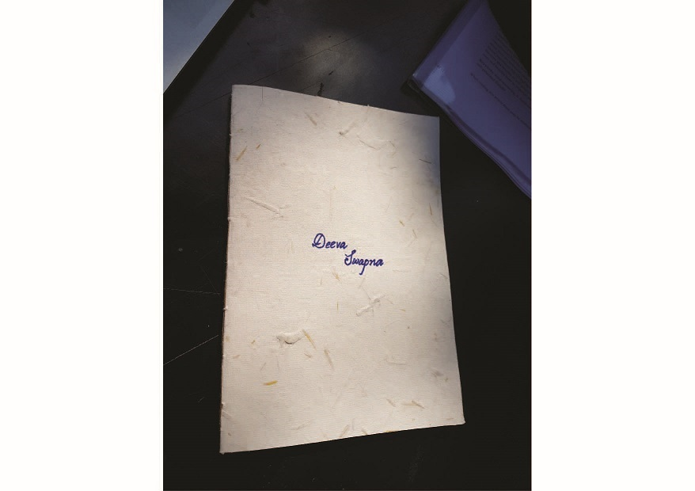

This interactive installations shows poetic side of daydreams which addresses the mental disability called 'Aphantasia' where person cant recall visual of his/her memory or imagination.
Dream, Dream Dream
Dream transform into thoughts
And thoughts result in action.
These words from Dr. APJ Abdul Kalam gives us a glimpse of his thoughts on the power of human imagination. Are daydreams good or bad? It is very subjective.
As Rumi said, 'Infinite mercy flows continually, But you're asleep and can't see it', mental presence is given more preference in all kind of ancient philosophy and way of living. It has its own value.
But Daydreaming also allows Medial Prefrontal Cortex, Posterior Cingulated Cortex, and Temporal Partictal Junstion to make the really important decision of our life. Daydreaming is a situation where You are not asleep, You are not Awake; you are in between somewhere. 'Default Network’- awakes when nothing happens which your brain considers important and you starts daydreaming.
Here, I wanted to address a mental disability which is called 'Aphantasia'. These people cant visualize things. They know mango but they cant create a picture of mango in their mind.
This image is drawn by Blake Ross, co-founder of Firefox who is suffering from this disability. He wrote, 'This has been my rendition of a cat/dog/bird/Hugh Jackman/cupcake monster since I was 3' in his article on Facebook while confessing this disability. There is 2% population is suffering from Aphantasia. (ref:Aphantasia Online)
My installation celebrates the ability of visualization and virtual portation to another world where we can reach in few nanoseconds.
'DeevaSwapna' is a Gujarati word meaning 'Daydream', inspired by the book title written by the great educationist Gijubhai Badheka. He had shared his bittersweet experience of teaching in a school at a village of Gujarat. Must read the book.

I made a book which is handmade with handmade paper with handwritten poems in it. There are 3 poems which describes scenarios and after reading the poem when you change the page, you find your self in the place which I imagined while writing the poem.
I have used Augmented Reality and Virtual Reality together which gives the feeling of loss of current reality while having immersive-ness of 360 degrees environment and get back to reality after finishing that daydream. There is the transition between AR and VR on each interaction.
This installation is just given an education about this condition but further development can be a medical application which can use for the people who are suffering.